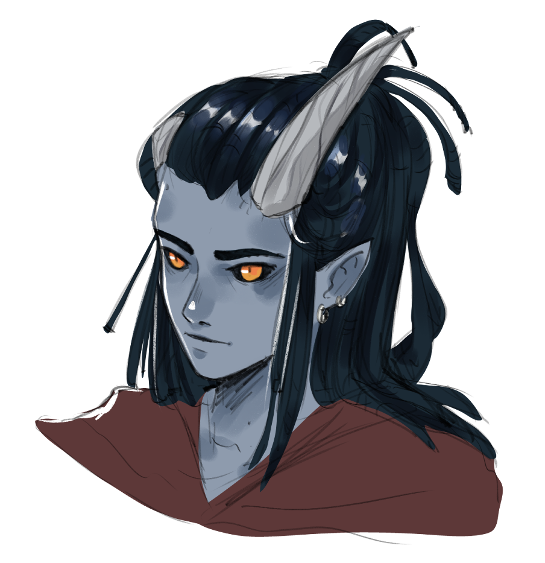
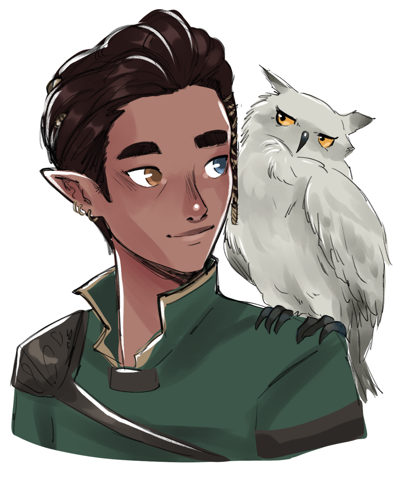
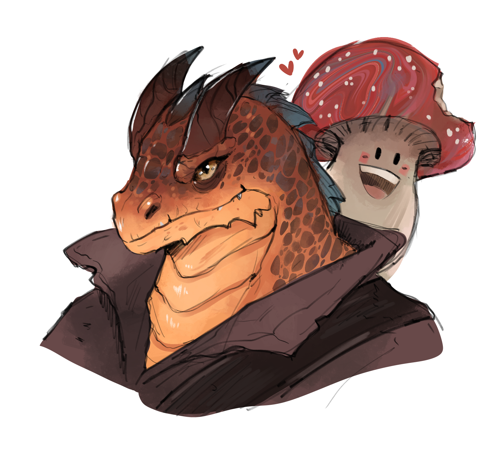
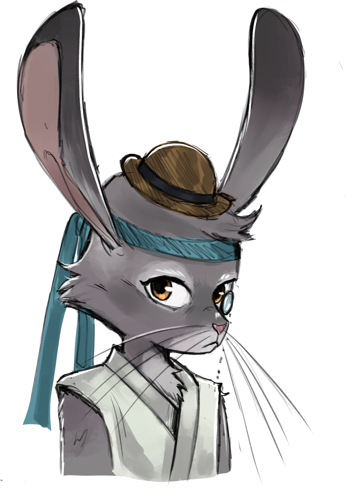

Correva l'anno 1490 Dale Reckoning quando quattro avventurieri dalla storia misteriosa hanno scosso dalle fondamenta il mondo di Toril:
I nostri avventurieri si incontrano sul ponte di una nave mentre scendono verso una suggestiva isola, Sonno del Drago, conosciuta altresì come isola delle tempeste, situata a molte miglia da Waterdeep nell'arcipelago Red Rocks.
Ognuno è lì per un motivo differente, chi per scoprire il proprio destino, chi per un presagio, chi per arricchirsi o chi solo per noia, eppure, anche se molto diversi l'uno dall'altro, gli avventurieri riescono a trovare in loro delle persone "affidabili" (forse per necessità): si dice che Mylo era solito rubare denaro dalle tasche di Fascal, che Drosda non smettesse di pubblicizzare la sua fede e che Valinor non riuscisse proprio a sopportare i coboldi.
Qui fanno la conoscenza di una sacerdotessa di nome Runara, che li guida nel cercare di risolvere degli strani avvenimenti che si stanno verificando sull'isola. Finchè gli rivela di essere un Drago di Bronzo e che suo figlio Aidron è stato rapito da un cucciolo di drago blu, pregando loro di salvare suo figlio.
Con uno sforzo condiviso i nostri riescono nell'impresa: Drosda e Fascal tengono distratto il drago blu di nome Fondifaville, mentre Mylo e Valinor riescono a trarre in salvo il draghetto di bronzo. Qui scoprono che lo scopo di Fondifaville è mettere in atto un rituale per far risorgere una dragonessa rossa antica di nome Sharruth. Lo scontro con il drago è inevitabile e anche se in un primo momento pensano di aver scacciato definitivamente Fondifaville, questo riesce ad attaccarli alle spalle, lasciandoli a un passo dalla morte, solo grazie a Runara, i nostri eroi si riescono a salvare e ad "uccidere" Fondifaville.
I nostri avventurieri partono da Sonno del drago, tutti loro sanno di aver imparato qualcosa su loro stessi, e consapevoli del viaggio che li ha uniti si danno un ultimo addio. Eppure nell'anno 1513 DR rimangono ancora ignote le motivazioni del drago blu, che cercava di far risorgere un antico drago rosso...
Un addio che si rivelerà breve, infatti Mylo, Valinor, Fascal e Drosda si incontrano a phandalin durante la festa di fine anno, sono stati chiamati da una certa SG che si rivelerà a loro come Sorella Garaele una giovanissima ragazza che gli chiede di gestire un problema con un drago bianco che sta funestando Phandalin.
Durante quest'avventura fanno la conoscenza di Harbin Wester e suo fratello Tibor, Falco, Toblen e Gabriel e scoprono che la persona a loro rivelatasi come Sorella Garaele è in realtà Sara Glizoz, figlia adottata di Falco. Scoprono anche che Falco aveva una relazione con Runara ed entrano a contatto con molti luoghi del Phendelver.
Scoprono che Fascal si è unito a una società segreta chiamata Zhentarim di cui fa parte anche il fratello di Drosda, Doldur. Fascal sta per tradire i suoi compagni, ma forse per il legame che si è instaurato tra loro non riesce a portare avanti il suo tradimento, decidono quindi di uccidere Doldur e fermare così l'avanzata degli Zhentarim.
Phandalin viene attaccata dal drago bianco, ma una qualche entità, che insospettisce Mylo, salva la situazione all'ultimo momento.
Decidono quindi di affrontare a viso aperto il drago bianco Criovenn che si trova nella roccaforte della guglia ghiacciata, i nostri eroi sono pronti a coglierlo di sorpresa, ma un individuo di nome Silkas li massacra nel corpo e nell'anima, e nuovamente Runara salva gli avventurieri morendo nello scontro con Criovenn.
Silkas era l'ex compagno di Mylo, e rivederlo porta il ladro in un ciclo di sofferenza perpetuo.
Dopo lo scontro gli avventurieri vengono accreditati (forse immotivatamente) come grandi sterminatori di draghi e cominciano ad usare ufficialmente il nome Dragon Busters.
La vera sorella Garaele, dell'ordine degli arpisti li convince ad aiutare Waterdeep, convinta che i Dragon Busters siano effettivamente ciò che dicono di essere, gli richiede di indagare su un emergente gruppo che si fa chiamare Culto del Drago.
Scoprono che lo scopo del culto del drago è quello di far risorgere dall'Avernus la dea dei draghi cromatici Tiamat e che a capo di questo culto c'erano Silkas e il borgomastro di Phandalin Harbin Wester.
I Dragon Busters vengono coinvolti in un enorme scontro nel Castello Skyreach, un'isola volante costruita dai giganti delle nuvole, dove la cultista Rezmir è a capo di un grosso dispiegamento delle forze del culto, e riescono a salvarsi grazie a Fascal, trovandosi nuovamente a un passo dalla morte, ma avendo indebolito molto il culto.
Avendo gestito il conflitto contro il culto i Dragon Busters vengono chiamati a Waterdeep dove fanno la conoscenza del consiglio di cui fa parte Lord Neveramber e gli viene chiesto di trovare il Draakhorn, uno strumento usato per richiamare tutti i draghi.
I nostri falliranno nel loro intento e vengono uccisi da Silkas e Neronvhine, un principe elfico dedito al culto.
Vengono fortunatamente riportati in vita da Sara Glizoz.
L'ultimo viaggio dei dragon busters prende atto nel tempio di Tiamat, un luogo che si trova in una caverna delle profondità, qui riescono a sconfiggere i capi dei cultisti e a far rinsavire Silkas, tuttavia Harbin fa risorgere Tiamat,ma i nostri avventurieri riescono a far crollare il tempio rispedendo Tiamat nell'avernus e riescono a fuggire con un'incatesimo di teletrasporto.
Si racconta che dopo questo evento i Dragon Busters si siano per sempre separati che Valinor se ne sia andata dal Faerun e che abbia intrapreso una relazione con Delaan Winterhound dell'Enclave di Smeraldo, che Drosda si sia messo a lavoro su Phandalin per farla diventare una città in cui ogni avventuriero possa trovare una casa, che Fascal si sia dedicato a una vita pacifica con il padre Fatalbert e che Mylo e Silkas siano finalmente riusciti a ricongiungersi. L'anno è il 1492 DR.
Durante il terzo trimestre del 1492 si perdono le tracce di Drosda, Fascal e Mylo. Nessuno sa cosa gli sia successo...
Una nuova avventura inizia in un luogo indefinto di Toril nell'anno 1513 DR, quattro ragazzi si incontrano una sera davanti un circo:
Invitati al circo i ragazzi fanno esperienza di diverse giostre, e trovano una connessione, un legame, con quel luogo.
Scoprono che diversi membri del circo sono svaniti e che a molti altri, come a loro, è stato portato via qualcosa.
Fanno la conoscenza del signor Strego e il signor Lumen, che si mostrano preoccupati dagli avvenimenti strani che stanno accadendo.
Quindi, dopo che Arhabal è stato incoronato monarca di Stregolumen con un filo dorato che l’ha indicato, Strego e Lumen chiedono ai ragazzi di entrare nello specchio in modo da ritrovare ciò che hanno perso.
I ragazzi si ritrovano in una palude, intorno a loro si mostra un mondo luminoso e magico pieno di creature caratteristiche che non hanno mai visto prima.
Invitati al circo i ragazzi fanno esperienza di diverse giostre, e trovano una connessione, un legame, con quel luogo.
Dopo una serie di vicende che gli fanno capire che questo luogo, Prismeer, è fuori dall’ordine costituito, visitano la regione di Quivi e incontrano una megera: Bavlorna, un essere antopromorfo simile a un rospo membro insieme alle sue sorelle della congrega della clessidra, e salvano dalla prigionia un satiro di nome Vansel.
Bavlorna chiede loro di rubare dei dipinti nella regione di Ivi a una delle sue sorelle: Belladonna.
I ragazzi si dirigono ad Ivi, sempre più sogni si fanno largo nelle loro notti, come a sottolineargli di già essersi trovati lì, e di essersi già conosciuti. Ma sono sempre stati quattro? Ancora oggi questo dettaglio sembra essere confuso…
Ad Ivi il gruppo conosce Champy, un simpatico funghetto che comincia a vivere nella borsa di Arhabal e incontrano Will con il gruppo di bambini smarriti.
Inoltre, notano delle immense impronte di una creatura che scoprono chiamarsi Jabberwock.
Salvano l’unicorno Lamorna dall’assalto di Zarak un membro della lega della malvagità.
Infine con i ragazzi smarriti provano ad assaltare Mantoscuro, un enorme quercia caduta, il luogo in cui risiede Belladonna, ma la missione non va come se l’aspettavano, Nioh riesce a recuperare i ritratti, ma qualcosa si rompe nella loro interazione, Will viene trasformato nella creatura che era originariamente: un Oni estremamente pericoloso.
I nostri riescono a salvarsi solamente grazie a uno sforzo di Will che riesce ad affrontare Belladonna. Scoprono di non poter recuperare quello che hanno perso e si ridirigono da Bavlorna che, delusa, gli chiede di dirigersi ad Altrove e affrontare Endelyn.
Altrove è un luogo oscuro, immerso in una notte perenne, la pioggia scrosciante non smette mai di bagnare le rocce e le montagne di questa regione.
Qui i nostri avventurieri, stanchi e in conflitto tra loro, si trovano a dover mettersi completamente in gioco, devono rimettere pace tra le fazioni qui presenti e trovare un modo di infiltrarsi nel castello di Endelyn, Madrecorno. Riescono a infiltrarsi dalle profondità tramite un tunnel situato nelle miniere dei Brigganock.
I ragazzi scoprono che Arhabal è ossessionato dalla vendetta nei confronti di persone che hanno il tatuaggio di un drago che viene ucciso da una spada e che i membri della lega della malvagità sembrano avere questo simbolo.
Nel castello di Endelyn sono obbligati a recitare (nuovamente) per la megera, capiscono che nella loro infanzia erano già stati manipolati da questa megera che gli aveva portato via delle capacità.
I ragazzi però non si arrendono e affrontano Endelyn che viene però aiutata da Bavlorna e Belladonna. Quindi gli avventurieri sono costretti a dirigersi al Palazzo dei desideri reconditi dove si dice si trovi Iggvilw.
Nel palazzo sopra il cielo di Prismeer, il jabberwock e sanguine sono pronti a scontrarsi, il gruppo deve affrontare la lega della malvagità guidata da Kelek per un’ultima volta.
La lega viene sconfitta, ma Zargash riesce a fuggire.
Nioh afferra la Snicker-snak e con uno sforzo congiunto riescono ad uccidere il Jabberwock, e a liberare Iggvilw, meglio nota come Zybilna, meglio nota come Tasha interagendo con il corno dell'unicorno.
Tasha gli rivela di essere stata la loro madre adottiva quando avevano perso la via dal circo e che si dispiace di ciò che gli ha fatto Endelyn.
Le tre megere scompaiono da Prismeer.
Shion torna dalla sua famiglia di aquile.
Bowie si dirige da Valinor con il suo lupo e Ziggy.
Nioh torna sulle montagne che l’hanno reso un monaco pensando all’amore perduto.
Arhabal rimane a regnare su Altrove, il suo cuore è ancora in subbuglio.